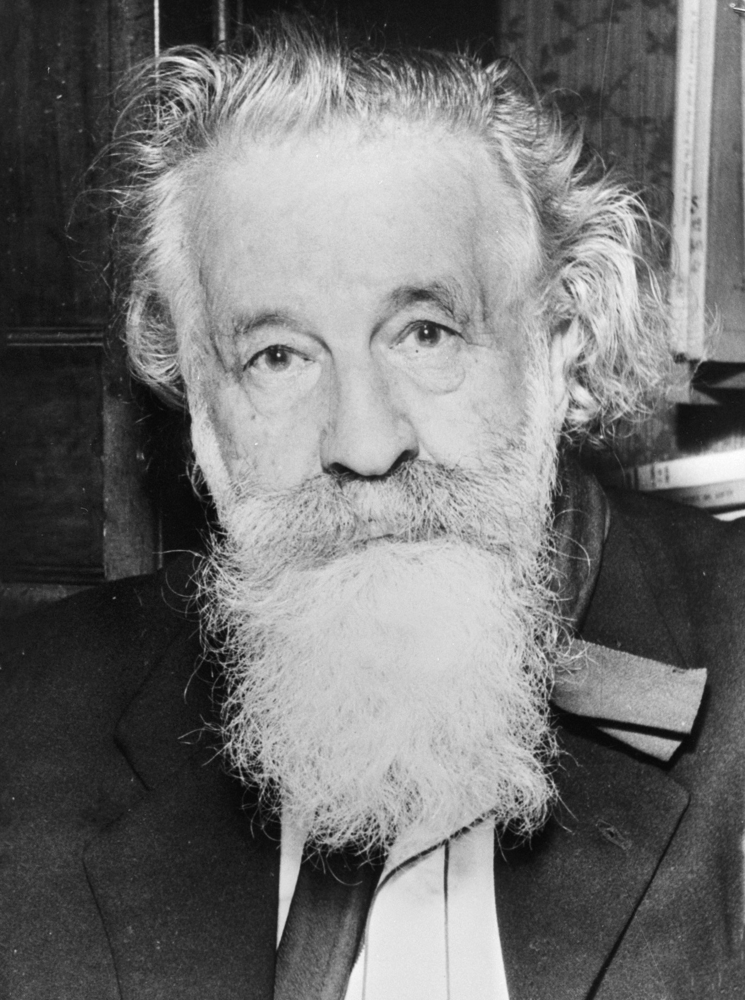

Гастон Башляр
27.06.1884 г. - 16.10.1962 г.

Детство и юность
Гастон Башляр родился в Бар-сюр-Обе 27 июня 1884 года. Его отец был ремесленником, жила семья небогато, но тем не менее сумела дать мальчику образование – с 1895-го по 1902-й он учился в местном колледже.
После его окончания юноша сразу начал работать. Целый год он преподавал в колледже Сезанна. Затем, с 1903-го по 1905-й, трудился в почтовом управлении города Ремирмон. А потом на год был отправлен проходить военную службу телеграфистом (Понт-а-Муссон, 12-й драгунский полк).
С 1907-го по 1913-й Гастон Башляр занимал должность комиссара почтового управления в одном из районов Парижа. Он даже хотел организовать конкурс инженеров почтовой связи в 1912 году, однако в этом деле потерпел неудачу. Но зато тогда же он стал лиценциатом в области математических наук.
Позже, 8 июля 2914 года, Гастон Башляр женился на Жанне Росси – молодой преподавательнице. И меньше чем через месяц после этого (2 августа) его мобилизовали на Первую мировую войну. В общей сложности он провел на фронте 38 месяцев. По возвращении Гастону Башляру была вручена боевая награда «Croix de Guerre».
Философия Башляра
Философия науки
Предметом интереса Гастона Башляра на протяжении всей его жизни являлись философские основы естественных наук. Свои первые работы по этой проблематике он начал публиковать на рубеже 1920–1930-х годов. Его философским дебютом стало исследование «Очерк о приблизительном познании» («Essai sur la connaissance approchée», 1928). За ним последовали такие работы, как «Новый научный дух» («Le nouvel esprit scientifique», 1934) и «Становление научного духа: заметки по психоанализу объективного познания» («La formation de l’esprit scientifique: contribution à une psychanalyse de la connaissance objective», 1938). Уже в довоенных книгах Башляра заметно как влияние школы Анри Бергсона и психоанализа, так и научного конструктивизма.
В своих дальнейших работах, таких, как «Прикладной рационализм» («Le Rationalisme appliqué», 1949) и «Рациональный материализм» («Le matérialisme rationnel», 1953) Башляр продолжил систематический анализ философских проблем естествознания, сконцентрировавшись на проблеме научного творчества и анализе основных понятий современной науки. Ввел понятие технонауки.
Психоанализ стихий
Другой важной составляющей философского наследия Башляра является его пятитомное исследование о психоаналитическом значении для воображения человека образов классических «материальных стихий». Начало этому исследованию было положено Башляром ещё в 1938 году в небольшом исследовании «Психоанализ огня» («La psychanalyse du feu»). Позже последовали «Вода и грёзы» («L’eau et les rêves», 1942), «Воздух и сновидения» (в русском переводе работа названа «Грёзы о воздухе», «L’air et les songes», 1943), двухтомник, посвящённый образам земли — «Земля и грёзы о покое» («La terre et les rêveries du repos», 1946) и «Земля и грёзы воли» («La terre et les rêveries de la volonté», 1948). Это исследование проведено Башляром с привлечением самого широкого литературного, историко-философского и научного материала.
Значение Башляра
В истории философии мало найдётся персон, которые обладали бы столь разносторонними интересами, как Башляр. Его интерпретация как поэтических текстов так и естественнонаучных теорий оказала заметное влияние на дальнейшее развитие гуманитарных наук и эпистемологии. В частности, деятельность Башляра стала одним из ориентиров для таких видных исследователей науки и искусства, как Луи Альтюссер, Ролан Барт, Мишель Фуко, Жан Старобинский.
Личная жизнь
Позже, 8 июля 2914 года, Гастон Башляр женился на Жанне Росси – молодой преподавательнице. И меньше чем через месяц после этого (2 августа) его мобилизовали на Первую мировую войну. В общей сложности он провел на фронте 38 месяцев. По возвращении Гастону Башляру была вручена боевая награда «Croix de Guerre».
Смерть
В 1955 году Башляр становится членом Академии моральных и политических наук, занимая там место Эдуарда Леруа. Указом от 24 января 1956 года назначен командором Ордена за заслуги перед почтой. В 1960 году получает командорскую степень Ордена Почетного легиона. 6 ноября 1961 удостаивается Большой премии в области наук и искусств, присуждаемой министерством культуры Франции. Умер в Париже 16 октября 1962 года в возрасте 78 лет, похоронен в Бар-сюр-Обе.
Основные труды
- Интуиция мгновения (L’Intuition de l’instant) — 1931
- Новый научный дух (Le nouvel esprit scientifique) — 1934
- Психоанализ огня (La psychanalyse du feu) — 1938
- Философское отрицание (La philosophie du non) — 1940)
- Вода и грёзы (L’eau et les rêves) — 1942
- Грёзы о воздухе (L’air et les songes) — 1943
- Интуиция мгновения (L’Intuition de l’instant) — 1931
- Новый научный дух (Le nouvel esprit scientifique) — 1934
- Психоанализ огня (La psychanalyse du feu) — 1938
- Философское отрицание (La philosophie du non) — 1940)
- Вода и грёзы (L’eau et les rêves) — 1942
- Грёзы о воздухе (L’air et les songes) — 1943